В Барселоне, столице Каталонии, есть здание, которое с незначительными перерывами возводят уже 120 лет. Но все когда-нибудь кончается. Заложенный в 1882 году грандиозный Искупительный храм Святого Семейства («Саграда Фамилия») постепенно приобретает вид завершенного творения. Такого, каким его задумал один из величайших архитекторов XX века Антонио Гауди.
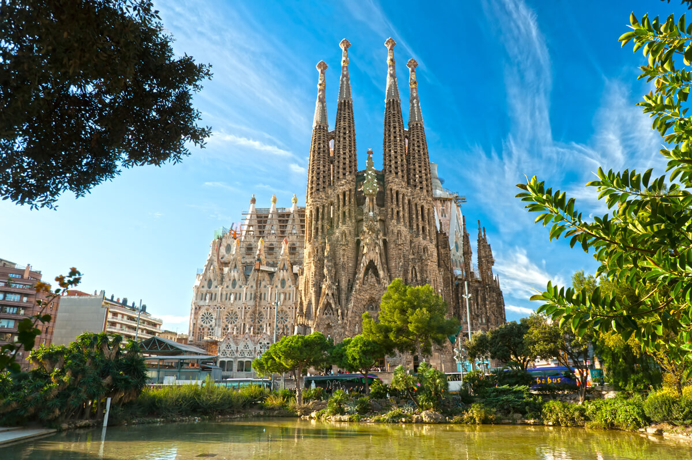
Заказ на строительство, точнее, на его завершение (храм начал возводить другой архитектор), Гауди получил, когда ему едва исполнился 31 год. На его счету тогда была всего одна постройка – цех для отбеливания хлопка. «По легенде сеньору Букабелье, председателю Общества Святого Иакова, которое выступало главным заказчиком храма, однажды приснилось, что собор Саграда Фамилия возведет блондин с голубыми глазами. Как понимаете, среди испанцев голубоглазых блондинов не так уж много, поэтому, когда Букабелья увидел Гауди, он сразу понял: это тот самый человек», рассказывала искусствовед Анжела Санчес-и-Гаргальо. На самом деле заказчики остановили свой выбор на Гауди скорее всего из соображений экономии – маститый архитектор обошелся бы им значительно дороже. Однако работодателей ждало разочарование, так как уже в первые годы смета была превышена многократно.
Гауди приступил к работе, не имея готового проекта. Он вообще предпочитал импровизировать на строительной площадке. По-другому архитектор работать просто не мог. К каждому своему творению он относился, как к живому существу, которое должно расти свободно и естественно. При всей фантасмагоричности созданных Гауди форм они никогда не были абстрактны, напротив, всегда прямо восходили к чему-то существующему в природе. На вопрос, где он находит для себя образцы, архитектор отвечал: «В обыкновенном дереве, с его ветвями и листьями. Все части дерева растут органично и кажутся прекрасными, потому что создал их один художник – Бог». Черпая вдохновение в живой природе, Гауди создавал конструкции, казавшиеся его коллегам невозможными. Только через десятилетия после смерти архитектора, уже в компьютерный век, было доказано: инженерные решения, к которым Гауди пришел интуитивно, полностью отвечают законам механики. В храме Саграда Фамилия он «насадил» целый лес колонн с капителями в виде ветвей. Переплетаясь, они перекрывают свод ажурной лесной паутиной.
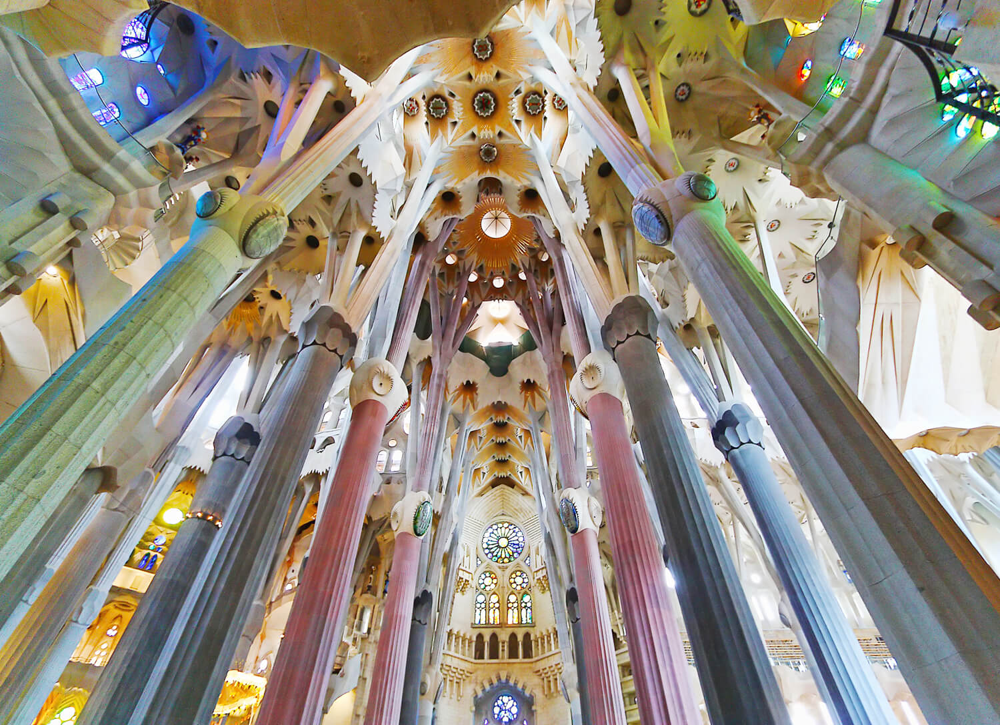
На Гауди обратили внимание, когда он уже начал возводить храм Саграда Фамилия, и вовсе не в связи с этим проектом. В 1878 году он выстроил летнюю виллу для фабриканта Мануэля Висенса. План дома был чрезвычайно прост, но архитектор облицевал виллу разноцветной глазурованной плиткой и украсил таким количеством пристроек и декоративных элементов, что она превратилась в сказочный мавританский дворец. Первые проекты Гауди привели в восхищение богатого мецената графа Эусеби Гуэля. По его заказам Гауди построил несколько замечательных зданий и спланировал городской парк. Хотя заказы сыпались на него со всех сторон, с 1914 года Гауди целиком посвятил себя храму Саграда Фамилия.
7 июня 1926 года в Барселоне был торжественно пущен первый трамвай. Лишь одно событие омрачило тот праздничный день – через несколько часов после открытия движения под колеса вагона попал какой-то нищий старик. Его отвезли в больницу, где он вскоре скончался. Тело уже собрались отправить в общую могилу. Но одна из сотрудниц госпиталя опознала тело. Это был Гауди... Похоронили архитектора в крипте Саграда Фамилия – храме, который он считал главным делом своей жизни.
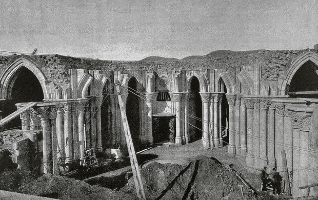
В 1936 году, когда в Испании разгорелась гражданская война, возведение храма прервалось. Анархисты, которым в тот период фактически принадлежала власть в городе, уничтожили почти все макеты и чертежи Гауди. Интересный факт: находившийся тогда в Барселоне знаменитый английский писатель Джордж Оруэлл отнесся к этому акту вандализма вполне положительно. Храм, по его мнению, вообще следовало бы взорвать.
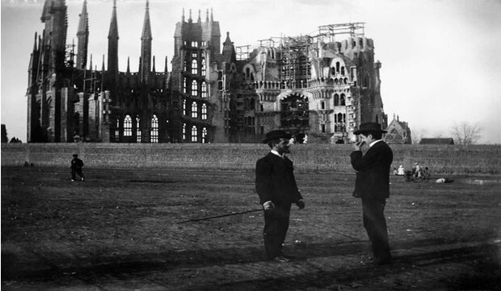
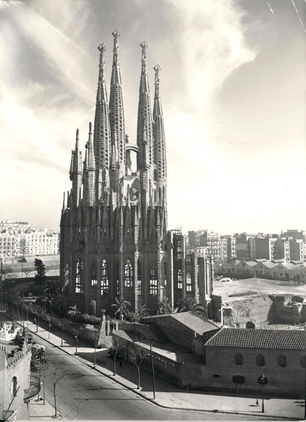
Сага со строительством собора Святого Семейства в Барселоне подходит к финалу. В 2026 году ожидается окончание работ. Все эти годы строительство Sagrada Famíliа велось незаконно и на него не было официальной лицензии. Однако нынешнему мэру Барселоны, похоже, удалось урегулировать столетний конфликт. Двухлетние переговоры, инициированные городскими властями, привели, наконец, к «историческому соглашению» и долгожданной легитимизации строительства. В октябре 2020г. cобор согласился уплатить городу 36 млн евро с рассрочкой на 10 лет, которые пойдут на развитие городской транспортной сети, улучшение доступа к метрополитену, развитие улиц вокруг Sagrada Familia обеспечение порядка и безопасности.
Сумма, конечно, немалая, но она учитывает масштабную реконструкцию микрорайона из-за работ над фасадом Славы, которая включает кроме всего прочего строительство парадной лестницы, подземной парковки для туристических автобусов, туннеля метро под Calle Mallorca и, что самое главное и против чего выступают местные жители, — снос целого квартала жилых домов.
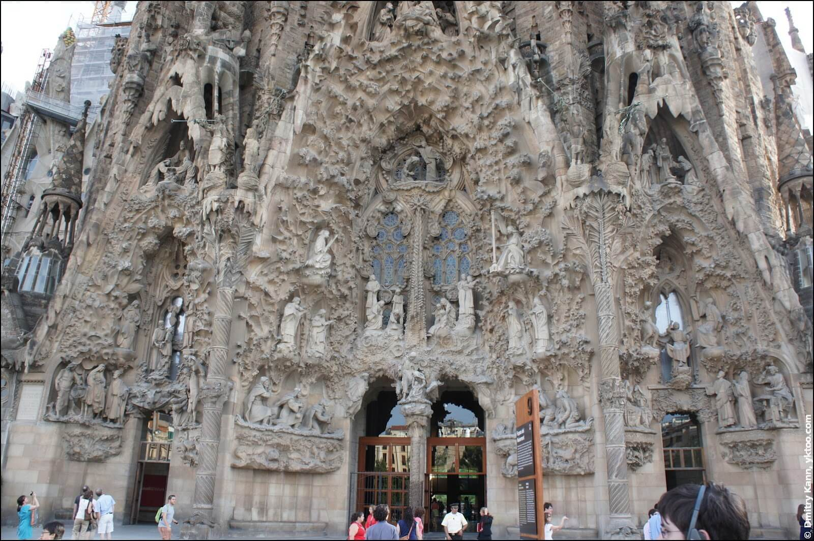
Согласно планам Гауди храм должен иметь три фасада: Рождества, Страстей Господних и Вознесения Христова. Над каждым возвышаются 12 башен, по числу апостолов. Еще 6 башен должны быть возведены над центральным нефом: 4 – в честь евангелистов, одна, посвященная Богородице, и самая высокая, стасемидесятиметровая – Христу. При жизни Гауди был завершен лишь фасад Рождества и венчающие его четыре башни апостолов. Отделке башен архитектор уделял особое внимание, стремился сделать так, чтобы, по его собственному выражению, «ангелам было бы приятно на них смотреть». Поэт Лорка, увидев башни храма, спросил у Гауди: «Вы что, создаете оргaн для Господа?» Гауди согласно кивнул. Его мечтой было заставить башни резонировать во время ветра так, чтобы в храме звучала музыка Творения.
Скульптурные группы фасада Рождества изваяны Гауди в натуральную величину. Для сцены избиения младенцев архитектор делал гипсовые слепки с мертворожденных детей. Чтобы сделать слепок с животного, он предварительно погружал его в сон с помощью хлороформа. На фасаде точно воспроизведены растения, характерные для Палестины и Каталонии, а между башнями высится рождественское дерево.
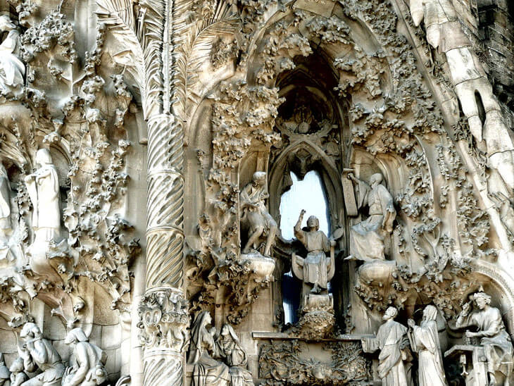
И напротив, подчёркнуто прямолинейно-аскетичный фасад Страстей (façana de la Passió), расположенный с западной стороны, со Спасителем, апостолами и сценами из Тайной вечери, поцелуя Иуды и пр., по замыслу автора, должен был наводить страх на зрителя, подчёркивая драматизм изображённых событый. Он был возведён сравнительно недавно (строительство башен завершено в 1976 году) и фигуры чем-то неуловимо напоминают роботов из «Трансформеров» или персонажей из "Звездных воинов". Барселонцы недолюбливают этот фасад, называя его - «Звездные воины»
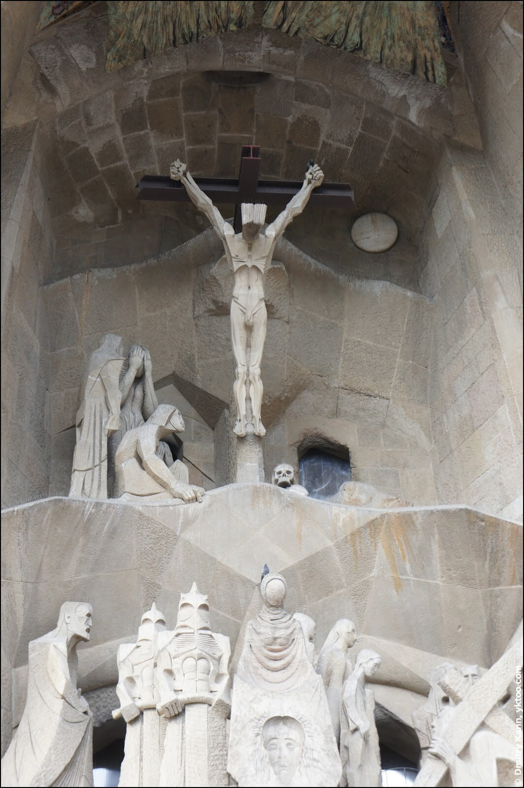
На фасаде Страстей расположены главные ворота храма с цитатами из Библии на разных языках
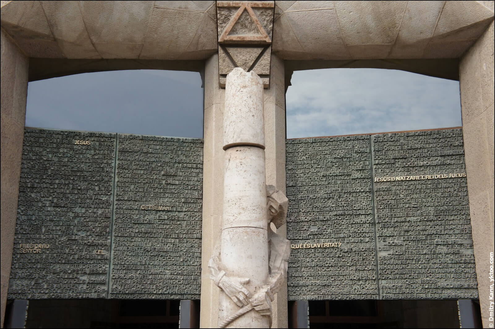
На месте жилого квартала на улице Майорка будет построена третья, заключительная часть храма Саграда Фамилия – фасад Воскресения Христова.
Но даже больше поражает внутренняя архитектура церкви. Огромные, высокие своды.
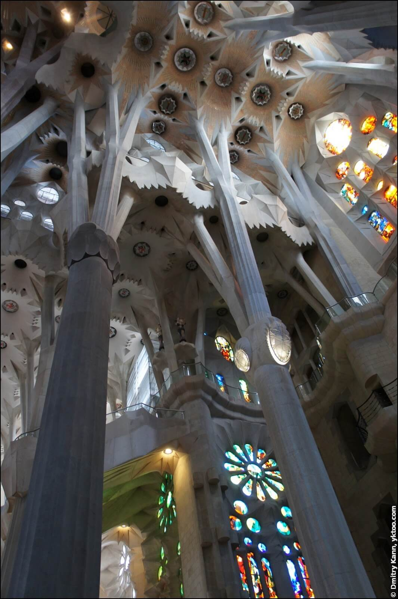
Знаменитые колонны храма, выполненные в виде стволов деревьев, уникальное творение Гауди, имеют исключительно сложную форму, образованную пересечением поверхностей самых разных форм: квадратные в основании, далее переходящие в восьмиугольник, шестнадцатиугольник и, наконец, в круг — после чего разветвляются в три, и каждая из этих трёх потом ещё в несколько.
Очень необычные элементы оформления, «медальоны» с подсветкой вкупе с тихой далёкой музыкой создают совершенно неземное ощущение.
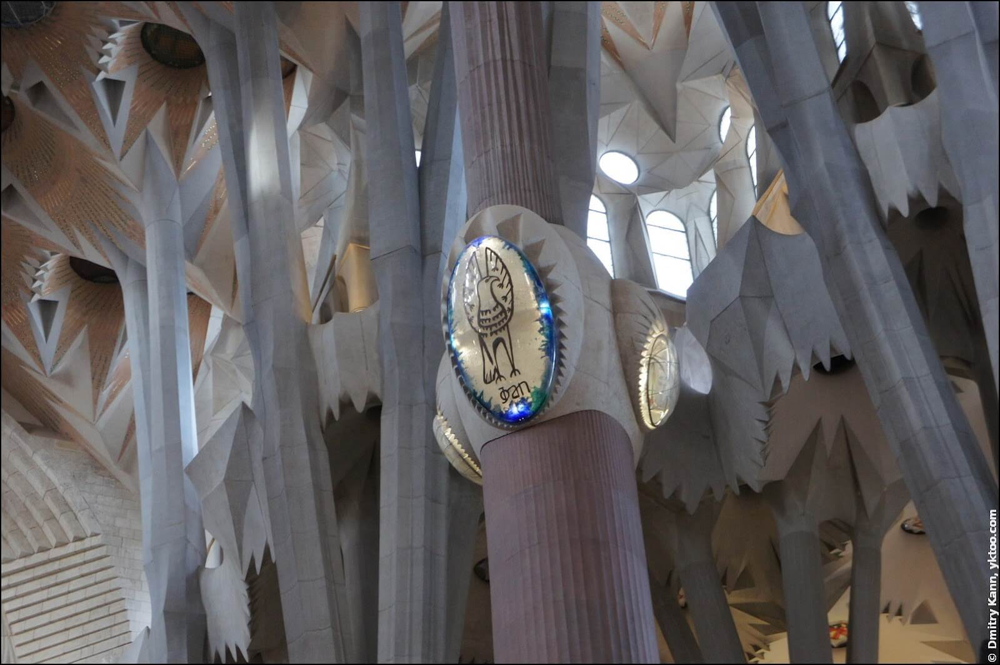
Подсветка и оформление в целом сделаны с исключительным вкусом.
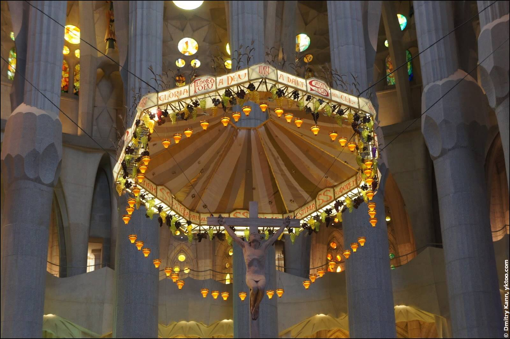
Изящная винтовая лестница в углу:
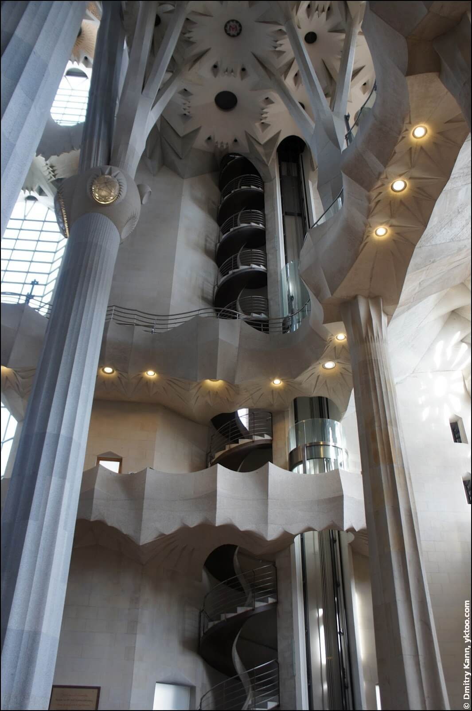
Говорят, что процесс создания скульптур превращался для мастеров в настоящий ад — немногие могли выдержать все мытарства. Тяжеленные гипсовые фигуры приходилось постоянно тягать вверх-вниз: архитектору необходимо было убедиться, насколько реалистично они выглядят на высоте. Также их неоднократно фотографировали, имитируя с помощью хитроумных приспособлений и игры с ракурсами визуальные искажения. И только когда результат полностью удовлетворял Гауди, гипсовые модели отдавались в работу скульпторам, которые вытачивали по ним фигуры из камня.
Использована информация с https://yktoo.com/, https://espanarusa.com, https://www.elledecoration.ru.
ВВЕРХ